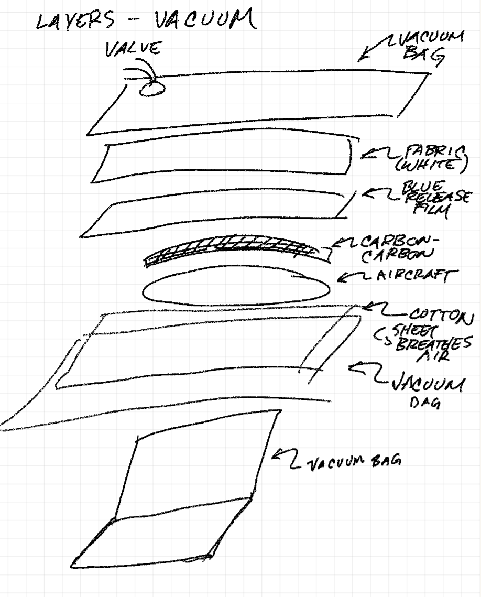

01
PLA core assembly and surface prep
The 3D-printed PLA sections were aligned and bonded together using steel-infused glue. After assembly, the surface was sanded heavily to remove polygon-like print geometry and soften features that would otherwise show through the carbon fiber shell.
